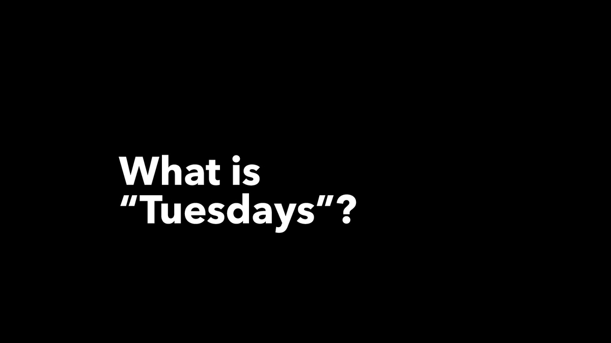
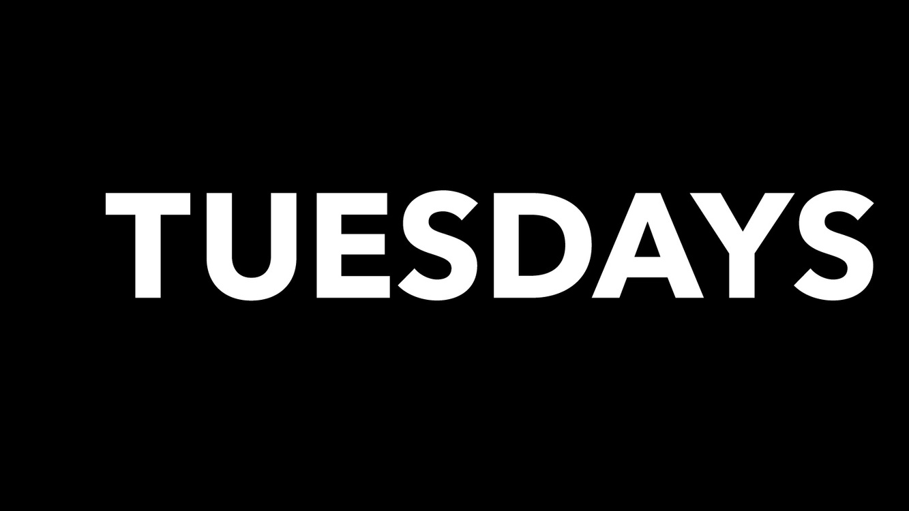
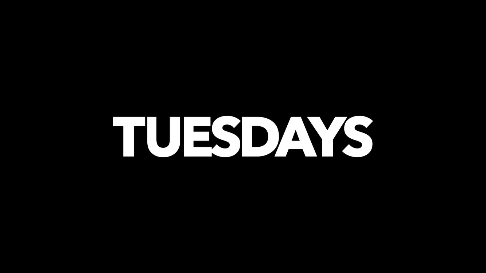
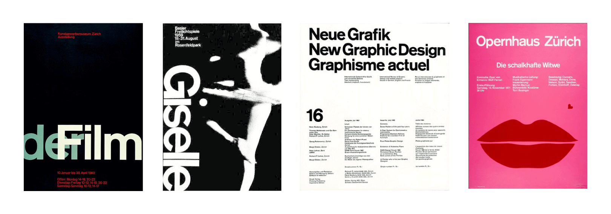
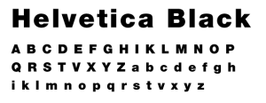
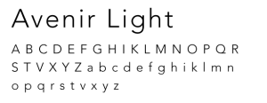

To design an identity for “TUESDAYS”, a fashion digital magazine that is aimed at a young audience who loves fashion and consumes it through smartphones and the web. From this identity, to design the magazine starting from typography to the complete layout.
Identifying the brand's characteristics
Mapping the brand’s personality traits to key features of typeface helps in choosing the perfect typeface to convey the brand’s values.
| Typeface features | Personality Traits |
|---|---|
| Category: Sans-serif | Young, Contemporary |
| Weight: Heavy | Bold, Fearless |
| Kerning: Tight | Strong, Stands out |
The typeface chosen was Avenir next Bold. Modifications were necessary to convey the characteristics mentioned above.
Logo in various forms
Swiss style – strong use of grids, minimal typography, clear hierarchy, extensive use of negative space.
From the card sorting exercises conducted, a clear information architecture emerged.

Inspired by the Swiss Style, the magazine will primarily use a single bold typeface for the content and use various sizes to create a hierarchy.
| Primary Typeface | Secondary Typeface |
|---|---|
|  |  |
| Classification: Neo-grotesque sans-serif | Classification: Geometric sans-serif |
| Designer: Max Miedinger, Eduard Hoffmann | Designer: Adrian Frutiger |
| Foundry: Haas Type Foundry | Foundry: Linotype Type Foundry |
| Date released: 1957 | Date released: 1988 |